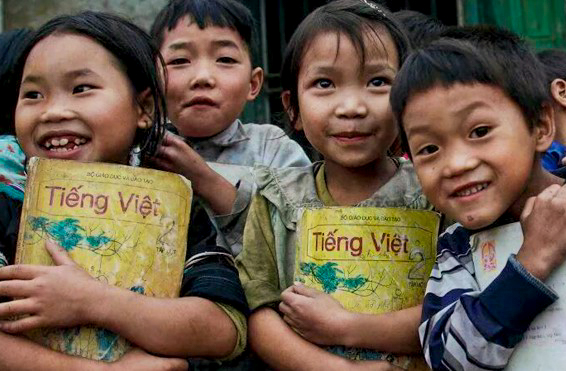

Đông đã sang, mang cái lạnh bao phủ khắp mọi nơi. Thế nhưng, với những người dân ở Khú Trù, Save The Words tin rằng mùa đông năm nay sẽ ấm áp hơn mọi khi. Họ cảm thấy ấm lòng vì sự sẻ chia, giúp đỡ từ cộng đồng mà quên đi những đợt rét buốt ngoài kia.Ngôi trường ở Khú Trù đã được khởi công xây dựng. Nơi đây, không chỉ riêng thầy và trò mà tất cả phụ huynh đều đang hướng về, đang chờ đợi từng ngày để thấy một ngôi trường hoàn thiện...
GIỚI THIỆU
"Được biết đến như một sứ mệnh mang lại những nụ cười trên môi cho những trể em có hoàn cảnh khó khăn ở vùng cao. Phấn đấu để cứu vớt những hoàn cảnh thiếu thốn về mặt vật chất, thực phẩm, y tế cũng như về mặt giáo dục. Để có thể hình thành và hoạt động suốt một quá trình dài thì không thể thiếu những cổ đông tài trợ để xây dựng nên 1 nền tảng vững chắc và hoạt động lâu dài hơn. Với sự tích cực trong 1 năm sẽ có vô số các hoạt động nhằm tạo điều kiện giúp đỡ về mọi mặt cho hầu hết các trẻ em vùng sâu vùng xa vượt khó"
HOẠT ĐỘNG

CỨU LẤY CON CHỮ

CƠM CÓ THỊT
Hãy cùng chúng tôi chọn người - chọn nơi để thương, để yêu, để sẻ chia. Và đó là những em nhỏ vùng cao ngoan hiền, đang sống ở những nơi nghèo khó, giúp các em bớt chật vật hơn khi tới trường. Hãy cùng cảm nhận niềm vui, hạnh phúc với các em bằng những đóng góp nho nhỏ - ít thôi nhưng đều đặn. Yêu thương bao giờ cũng có đủ cho tất cả mọi người. Sự yêu thương mà chúng ta cho đi là sự yêu thương mà chúng ta giữ mãi được cho mình...
ÁO ẤM ĐẾN TRƯỜNG
Những tháng gần cuối năm, vào thời khắc giao mùa sắp tới, nhiệt độ tại các tỉnh miền Bắc xuống thấp kèm theo mưa khiến trời rét buốt. Đặc biệt, tại các khu vực núi cao, tiết trời mùa đông khiến cả vùng chìm trong cái lạnh tê tái. Đâu đó hình ảnh các em học sinh nhỏ bé nơi vùng cao trên người chỉ mặc chiếc áo mỏng manh, ngồi trong những phòng học được dựng tạm bợ bằng những thanh tre, nứa lá, đầu trần chân đi đất dưới cái rét buốt thấu da thịt khiến người nhiều người không khỏi xót xa …